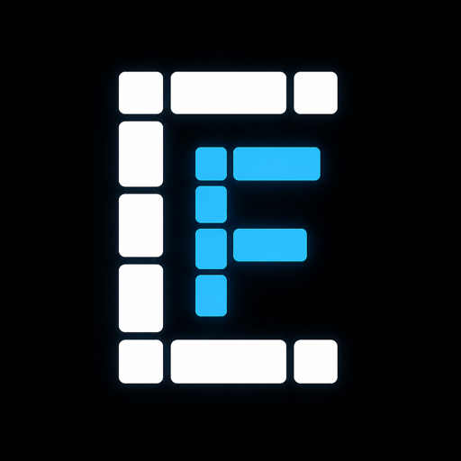

← Back to HomeToken-Native Agent Memory
Why the Next Generation of AI Memory Systems Should Think in Tokens, Not Vectors1. Introduction
The promise of AI agents is continuity: an assistant that remembers what you told it last week, understands your preferences, and applies prior context to new advice. Fulfilling this promise requires memory retrieval—the ability to surface the right prior conversation when it matters.
The dominant approach in 2026 is embedding-based retrieval: convert session text to dense vectors, store them in a vector database, and retrieve by cosine similarity. This architecture has three fundamental limitations:
- Latency and Cost: Every access requires API calls (embedding, LLM extraction, vector query), adding hundreds of milliseconds and ongoing costs.
- Semantic Averaging: Embedding models compress entire sessions into a single vector, often failing for vague queries like "what should I cook tonight?" where relevant context shares no vocabulary with the query.
- Opacity: A cosine distance of 0.73 does not provide an interpretable explanation of why a session was retrieved.
2. Token-Native Architecture
ContextFit's core insight is that the most valuable signals in conversational memory are structural, not semantic. We ask: What kind of memory did the user express, and does this episode's memory type match what this query needs?
Ingest (2.7ms/session) → Tokenization → Inverted Index (BM25) → Deterministic Atom Extraction → LSH Signatures.
Query (0.4-9ms) → Deterministic Router → Mode Selection → Structural / Preference / Evidence-Coverage / Evidence-Certificate Reranking → Ranked Results.
3. Memory Atoms
Memory atoms are regex-pattern-based extractions of typed memory primitives from user turns. This is a deterministic alternative to LLM-based fact extraction.
| Type | Captures | Example Trigger |
|---|---|---|
| user_preference | Likes, dislikes, favorites | "I love / I hate / my go-to" |
| user_interest | Current activities, exploration | "I'm getting into / working on" |
| user_goal | Stated intentions and plans | "I want to / I'm trying to" |
| user_constraint | Hard limits and requirements | "I can't / my budget / my allergy" |
| decision | Committed choices | "I decided / we went with" |
| temporal_update | State changes over time | "I switched / I now / no longer" |
| open_loop | Pending actions, reminders | "remind me / todo / follow up" |
| entity_fact | User-owned context facts | "I have / my X is / I bought" |
4. Episode Relevance Scorer
For vague advice queries, the relevant session often shares almost no vocabulary with the query. The Episode Relevance Scorer solves this by identifying the kind of memory signal a query needs.
The scorer is deterministic, interpretable, and runs at **0.4ms average latency**, eliminating the need for embedding cosine similarity.
5. The Query Router
No single retrieval mode is optimal for all query types. The router selects the best mode at near-zero cost:
- Vague Advice: → Episode Score
- Specific Fact: → BM25
- Temporal + Fact: → Fusion
- Personalized Preference Recommendation: → Preference Rerank
- Multi-session Synthesis: → Evidence-Coverage Rerank
6. Preference Reranker
The newest token-native route targets personalized recommendations where prior explicit taste should beat generic topical overlap. It extracts user turns, detects preference markers, normalizes tokens lightly, and scores overlap inside preference windows — without embeddings or LLM calls.
7. Structure-Aware File Ingestion
ContextFit now chooses semantic file boundaries before final token encoding. Markdown files chunk by heading and block boundaries with heading_path metadata; plain text chunks by paragraphs and separators; TMD ledgers chunk by source rows while preserving schema/front-matter context.
8. Compact Evidence & Citation Handles
Retrieval systems often spend prompt tokens repeating provenance metadata: source paths, chunk IDs, line ranges, row IDs, tables, and scores. They also often pass whole retrieved chunks to the model, even when only one row, bullet, sentence, or span is answer-bearing.
ContextFit separates those concerns. After ranking chunks, it runs deterministic query-focused extraction over the winning chunks: TMD files project matching rows, structured records preserve answer-dense fields, Markdown/list documents select relevant bullets or sections, and plain text falls back to focused spans. The model receives the smallest useful evidence, not the entire chunk by default.
ContextFit can then separate answer evidence from provenance metadata. The model sees compact evidence with short handles such as @r1; the runtime receives a sidecar reference map with exact source, chunk, line, row, table, and score data.
This keeps prompts smaller without making citations lossy. References include expiration timestamps so long-running agents can clean up stale handles, while UIs and runtimes can still resolve a cited handle back to exact provenance when needed.
9. Evidence-Certificate Reranking
Evidence-certificate reranking is an auditable post-retrieval promotion layer. A candidate can move up only when a generic, named reason code fires, and the move cannot displace protected answer-shaped evidence with weaker companion evidence.
Certificate reasons include multi_count_target_fact, temporal_date_entity, answer_evidence_tail_protection, preference_episode_rescue, and temporal_entity_action_rescue. The rule names are part of the trace, so runtime logs can show why a result moved, where it came from, and whether typed rescue fired.
10. Benchmark Results
Evaluated on a 499-case domain-agnostic agent-memory benchmark across 8 behaviors and 26 domains, plus a 79-case hard episodic subset.
| System | R@1 | MRR | Query Latency | Cost |
|---|---|---|---|---|
| OpenAI (embed-3-small) | 55.7% | 0.745 | ~150ms | API |
| Mem0 (GPT-4o-mini) | 54.4% | 0.716 | ~341ms | API |
| ContextFit (Token-Native) | 69.6% | 0.824 | 0.4ms | Free |
On the 79-case hard episodic subset, ContextFit outperforms OpenAI embeddings by 14 points in Recall@1 while running 375× faster. On the expanded 499-case benchmark, the auto router with preference and evidence-coverage reranking reaches 62.3% overall R@1 / 93.0% R@3, 85.5% preference R@1, and 82.1% multi-session synthesis R@1 at zero API cost.
On fresh LongMemEval-S reruns, pure token-native ContextFit with conversation-aware parent/child chunks reaches 95.1% Any@5, improving the previous token baseline through turn-aware session boundaries plus full-session parent context with no embeddings. A token-only companion-evidence coverage reranker then improves complete evidence coverage: overall All@5 rises from 77.9% to 80.4% while preserving the 95.1% Any@5 headline. Optional OpenAI fusion reaches 96.6% Any@5 and 98.7% Any@10 evidence retrieval with no vector database required; auditable evidence certificates plus typed rescue lift that optional path to 98.3% Any@5, 99.2% Any@10, and 86.4% All@5 with zero paired top-5 losses versus the 96.6% fusion baseline.
By question type, parent/child token-only closes the top-5 preference gap: single-session preference Any@5 reaches 83.3%, matching OpenAI fusion, while preference Any@1 is higher than OpenAI fusion (43.3% vs 40.0%). On multi-session questions, token-only Any@5 improves to 95.0%, within roughly 0.8 points of OpenAI fusion, and coverage reranking lifts multi-session All@5 from 55.4% to 65.3%. The remaining OpenAI advantage is now narrower: 65.3% token-only versus 72.7% with OpenAI fusion.
11. Impact & Implications
By removing the embedding dependency tier, ContextFit eliminates vendor lock-in, reduces network failure modes in the critical retrieval path, and eliminates per-query costs at agent scale.
12. Conclusion
The assumption that conversational memory must be converted to vectors is a convention inherited from document retrieval, not a technical necessity. Token-native retrieval is not just faster and cheaper—for the hardest memory problems, it is more accurate.